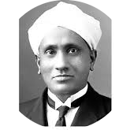

|  |
SIR C. V. RAMAN(1888-1970) |
Chandrashekhara Venkata Raman was born on 7 November 1888 at Tiruchirappalli, Tamil Nadu. His father, Chandrashekhara Iyer, was a lecturer in physics, in a local college. His mother Parvathi was a homemaker. He passed his matriculation when he was 12. He joined Presidency College in Madras. He passed his Bachelors and Masters examinations in science with high distinction. He had a deep interest in physics.
While doing his Masters, Raman wrote an article on physics and sent it to various scientific journals of England. On reading this article, many eminent scientists in London noted the talent of this young Indian. Raman wanted to compete for the ICS examination. But to write that examination, one had to go to London. As he was poor and could not afford it, he took the Indian Financial Service examination conducted in India. He was selected and posted at Rangoon, Burma (now Myanmar), which was then a part of British India.
Later, while working in Kolkata, he associated himself with an institute called Indian Association for the Cultivation of Science, which was the only research institution in those days. While working there, his research work came to the notice of the Vice Chancellor of Calcutta University. The Vice Chancellor appointed him as Professor of Physics in Calcutta University, Sir Raman was in a good position in the Financial Service. He gave up his profession and joined the academic career. When he was working as a professor, he got an invitation from England to attend a science conference.
As the ship was sailing through the Mediterranean Sea, Raman had a doubt as to why the sea water was blue in colour. This doubt initiated his research on light. He found out by experiment that the sea looks blue because of the 'Scattering Effect of the Sunlight. This discovery is called 'The Raman Effect'. A question that was puzzling many other scientists at the time was solved by him. His pioneering work helped him become a Member of the Royal Society of London in 1924. He was awarded with Knighthood by the British Empire in 1929. This discovery also got Sir Raman the Nobel Prize for Physics in the year 1930. He became the first Indian scientist to receive the Nobel Prize. Raman discovered 'The Raman Effect' on 28 February 1928 and this day is observed as the 'National Science Day' in India. In 1933, he joined the Indian Institute of Science, Bangalore, as Director. Later he quit the post of Director and continued to work only in the Department of Physics. The University of Cambridge offered him a professor's job, which he declined stating that he is an Indian and wants to serve in his own country. Dr Homi Bhabha and Dr Vikram Sarabhai were his students. Sir C.V. Raman died on 21 November 1970.